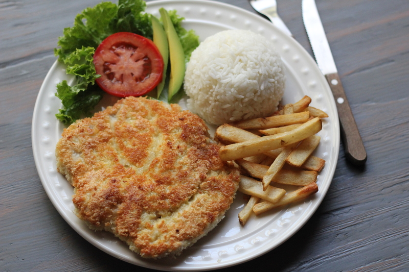
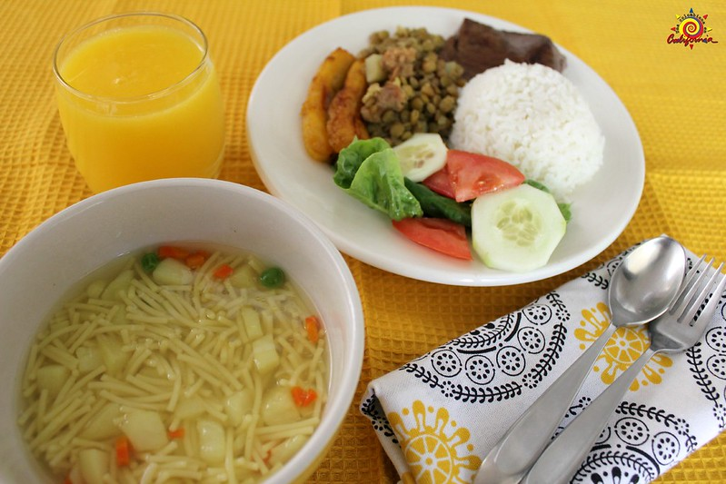
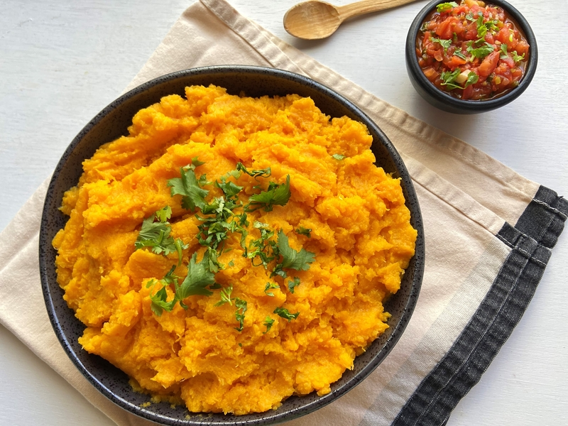
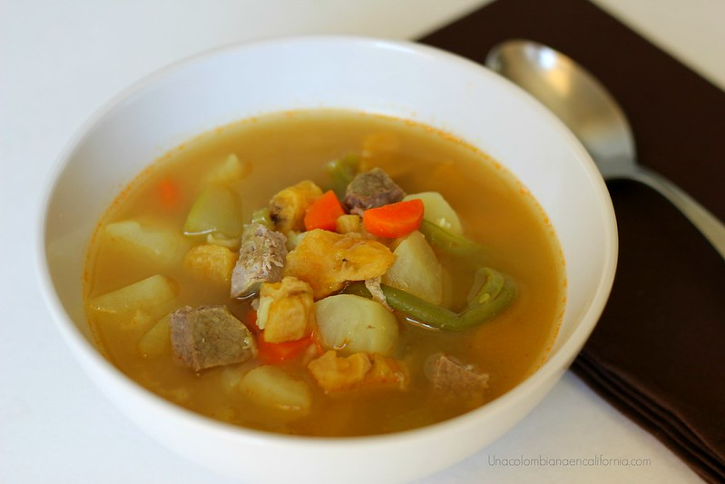
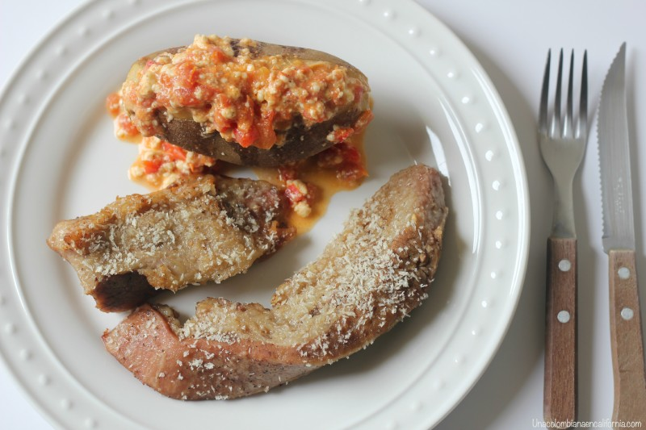
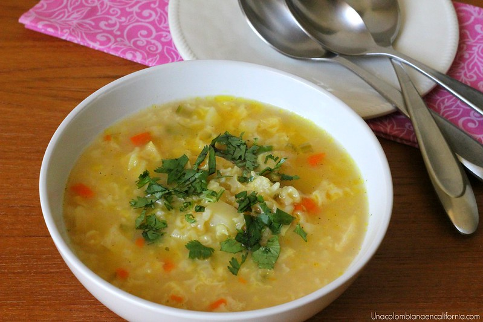

Carta
Estas son nuestras preparaciones
Arroz Atollado

El arroz atollado recibió este nombre porque en sus inicios se preparó con Tollo, una especie perteneciente a la familia de los tiburones y que abundan en las costas del Pacífico. Aunque algunas personas lo siguen cocinando con pescado, la mayoría de platos se preparan con carne de cerdo y pollo hoy en día.
Ingredients
2 tazas de arroz
4 cucharadas de aceite
1 pechuga de pollo grande
2 chuletas de carne de cerdo grandes
4 chorizos
6 costillas de cerdo
1 tallo de cebolla picado finamente
3 tomates cortados en cubos
2 dientes de ajo finamente picados
3 papas grandes
2 cucharadas de azafrán o pimentón dulce
1 cucharada de pasta de tomate
6 tazas de agua
Sal y pimienta al gusto
Cilantro picado al gusto
Arroz con Camarones

Aunque este arroz con camarones puede disfrutarse en cualquier época del año, es precisamente durante la Cuaresma cuando lo vemos con mayor frecuencia en nuestras mesas. Le llamo a este plato arroz con camarones criollos, porque los mariscos se saltean en nuestra salsa más típica, un sofrito que llamamos hogao.
Ingredients
1 cucharada de aceite
2 cucharadas de mantequilla
2 dientes de ajo picados
2 tazas de arroz
4 tazas de agua (o caldo de pescado)
½ cucharadita de cúrcuma, achiote o color
1 cubito o 1 cucharada de concentrado de camarón (opcional)
Sal al gusto
¼ taza de alverjas
¼ taza de zanahoria picada
½ taza de pimentón rojo picado
1 tomate maduro picado
1 cucharada de cilantro o perejil picado
Camarones grandes, limpios y crudos
Arroz con Carnes

El arroz es uno de los ingredientes más versátiles que tenemos en la cocina, al que se le pueden agregar infinidad de acompañantes y crear combinaciones maravillosas. Es también uno de los más económicos y por supuesto, uno de los más ricos. Hoy decidimos combinar arroz con pollo y chorizo.
Ingredients
4 chorizos
1 diente de ajo
2 tazas de arroz
4 tazas de agua
1 tableta de caldo de gallina
1 taza de pollo asado
½ taza de zanahoria en cubos
½ taza de alverjas (guisantes o chícharos)
½ taza de granos de maíz
Cilantro o perejil para adornar
Arroz Paisa

La receta no puede ser más sencilla pues consiste en mezclar arroz cocido con las carnes ya hechas: chorizo, tocineta y chicharrón. El siguiente paso es agregar una cantidad al gusto de hogao (ver receta aquí.), cubitos de plátano maduro frito y granos de maíz cocido. Al momento de servir se le pone cilantro picado para dar color y realzar aún más el sabor.
Ingredients
2 tazas de arroz cocido
½ libra de tocino para chicharrón
2 chorizos
4 tiras de tocineta
1 tomate picado
½ pimentón rojo picado
1 cucharada de mantequilla
Comino y sal al gusto
1 plátano maduro en cubos
1 taza de maíz desgranado cocido
Cilantro para servir
Arroz con Pollo

Hay numerosas maneras de preparar un arroz como este. Yo prefiero iniciar el proceso friendo un poco los trozos de pollo, que han sido adobados con ajo previamente. Luego añado las verduras que se dejan sofreír por un tiempo corto, para terminar la receta incorporando el arroz y el agua, con sus respectivos aliños.
Ingredients
1 - 2 pechugas de pollo
1 diente de ajo machacado
2 cucharadas de aceite
⅓ taza de zanahoria
⅓ taza de arvejas
⅓ taza de habichuelas
2 tazas de arroz
2 cubos de caldo de pollo
4 tazas de agua
½ cucharadita de cúrcuma (o achiote)
1 cucharada de pasta de tomate
Sal al gusto
Cilantro (opcional)
Bagre en Salsa

Otras opciones comunes de acompañamiento son unas rodajas de aguacate, trozos de yuca y plátano sancochados. Aunque para mí la combinación ideal es la del pescado con el arroz, el cual se mezcla a la perfección con la deliciosa salsa.
Ingredients
2 rodajas de bagre
½ cucharada de mantequilla
¼ taza de leche de coco
Sal al gusto
1 diente de ajo picado finamente
1 tomate picado
½ cebolla picada
Un puñado de cilantro
Chuleta Valluna
Una chuleta valluna se prepara ablandando la carne con un rodillo o un mazo, para luego sazonarla y apanarla, terminando su proceso, en una sartén con aceite caliente que la dore y la cocine a la perfección. Normalmente se sirve con arroz blanco, papitas fritas y una ensalada, y algunos prefieren agregarle un poco de limón. La mejor bebida para disfrutarla es un champús, si además se quiere disfrutar de una menú bien típico que rinda honores a la región.
Ingredientes
1 chuleta de cerdo
Sal, ajo en polvo y comino para sazonar
Harina de trigo
1 huevo batido
Miga de pan
½ cucharadita de aceite
Corrientazo Típico
Conocido originalmente como almuerzo corriente, esta clase de comida se compone de ingredientes de bajo costo, para que los restaurantes que lo ofrecen puedan venderlo a precios módicos. Se le denomina también almuerzo ejecutivo, porque generalmente son los empleados de las oficinas quienes acuden en su búsqueda, muchas veces afiliándose a un sistema de tiquetes de descuento que se consiguen cada mes en el restaurante más cercano.
Usualmente están compuesto de sopa, alguna clase de carne, arroz o papa (los dos ingredientes en un mismo plato son comunes también), ensalada y jugo de frutas. No son los menús más balanceados en la dieta pero son los que algunos colombianos se inventan para estirar el presupuesto de cada mes.
El corrientazo de la foto se compone de:
– Sopa de fideos.
– Lentejas con chorizo (ver receta aquí), arroz blanco, tajadas de plátano maduro y ensalada de lechuga, pepino y tomate.
– Jugo de mango.
Poteca de Ahuyama
Ella suele servirla con arroz blanco y alguna carne guisada, para sacarle el máximo provecho mezclando todo lo que hay en el plato y convertirlo en una impresionante combinación de sabores y texturas.
Ingredients
1 ahuyama mediana pelada y cortada en cubos
Agua o caldo vegetal que la cubra
1 cucharada de mantequilla
½ cucharadita de sal (al gusto)
Para el Hogao:
1 cucharada de mantequilla
Cilantro fresco picado
1 tomate maduro picado
½ tallo de cebolla verde picado
1 diente de ajo picado
Comino, sal y pimienta al gusto
Sancocho Trifásico
Por fin me atreví a preguntar por qué le dicen sancochito, sancocho pequeño o sancocho chiquito. Se llama así porque todos los ingredientes van picaditos. A diferencia del tradicional, en el que se cocinan carnes enteras con trozos grandes de papa, plátano y yuca.
Ingredients
2 plátanos verdes
1 yuca
5 papas
1 cubo de caldo de carne o de gallina
½ libra de carne
1 zanahoria cortada en cubos
1 tallo de apio
½ taza de auyama
Maiz (opcional)
Sobrebarriga
La sobrebarriga al horno es uno de mis platos colombianos favoritos y realmente es mucho más sencilla de preparar, de lo que parece. Es tan fácil que solo requiere marinarla con anticipación y luego dejarla cocer en una olla a presión.
Ingredients
3 libras de sobrebarriga
2 cervezas
3 dientes de ajo picados
3 cucharadas de aceite
4 cubos de caldo concentrado de gallina
3 tazas de agua
2 cucharadas de mantequilla
Miga de pan al gusto
Sopa Arroz
Arroz, callos (menudo), zanahoria, papa y alverjas, son los principales ingredientes de la receta tradicional. En el momento de servirla, se añade un poco de cilantro picado para realzar aun más, el delicioso sabor de la sopa.
Ingredients
1 libra de callos
Agua (medir la cantidad de agua de acuerdo a las porciones que se desean hacer)
Sal al gusto
1 cubito de caldo de carne o pollo
1 taza de arroz
½ taza de zanahoria picada
½ taza de alverjas (guisantes)
1 taza de papa en cubos
Cilantro picado (opcional)